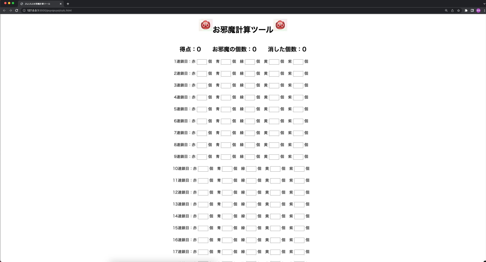

ゲームタイトル「ぷよぷよeスポーツ」における攻撃の指標である、「得点」「おじゃまぷよの個数」を計算して、表示してくれます。
URL
https://kiyokazu2424.github.io/puyopuyo/
担当
全体
サイトの目的
タイトル通り、ゲーム内の得点計算ツールです。現段階でネット上に有力なツールが少なく、サークル内でも活用できそうだったのでjavascriptを用いて作成してみました。 また、「ぷよぷよプログラミング」を参考にデモプレイも行えるようにしました。
ターゲット
自分及びサークルメンバー、ぷよぷよプレイヤー
サイトの工夫点について
・今まで見たかった中威力帯の攻撃力比較を瞬時に把握できるようにした
・対応するおじゃまぷよの個数をイメージしやすいように画像処理を施した
コーディングについて
js内で扱う変数が多くなったので、拡張しやすいようにできるだけわかりやすい変数名にするよう心がけました。
参考書籍
「これからはじめるVue.js3 実践入門」
「日経ソフトウェア 2021/3 ver」